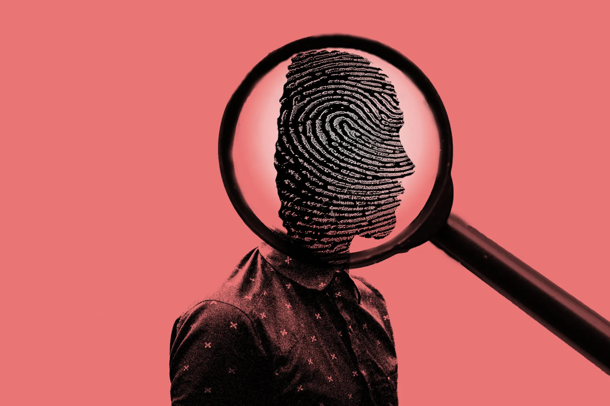

Afbeelding Gypsy Rose: https://thenorsestar.com/4977/arts-and-entertainment/gypsy-rose/
Afbeelding Ted bundy: Foto Ted bundy- https://www.crimeandinvestigation.co.uk/articles/killer-who-defended-himself-unique-and-very-public-trial-ted-bundy
Afbeelding Sanda Dia: https://www.demorgen.be/meningen/wij-zijn-diep-geschokt-en-beschaamd-professoren-ku-leuven-scherp-voor-unief-in-open-brief-over-dood-sanda-dia~bbabfaec/?referrer=https://www.google.com/
Afbeelding Kara Robinson: https://people.com/crime/kara-robinson-lifetime-movie-girl-who-escaped/
Afbeelding John Wayne Gacy:https://en.wikipedia.org/wiki/John_Wayne_Gacy
Afbeelding Monique: https://www.universiteitleiden.nl/onderzoek/onderzoeksprojecten/rechtsgeleerdheid/mensenhandel
